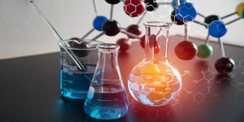

- Understand the challenges of switching from a fossil source-based economy to a biobased economy.
- Understand how to identify suitable raw materials and create valuable new products.
- Learn how to refine biomass without damaging its valuable components.
- Perform a functional analysis of potential methods that can be used for refining a resource.
- Learn how to efficiently convert biobased feedstocks into desired products.
- Evaluate technological, ethical, societal and economic consequences in the production of biobased products.
Chemistry and Technology for Sustainability
Learn about the basic consumer science, business, logistics, supply chain, and economic principles that are essential for a successful transition from fossil resources to renewable biomass resources in a biobased economy.
- Understand the concept and importance of the biobased economy and the value of biobased products
- Assess sustainability issues for a given biobased case
- Decide how to implement a consumer point of view during the development of a biobased product